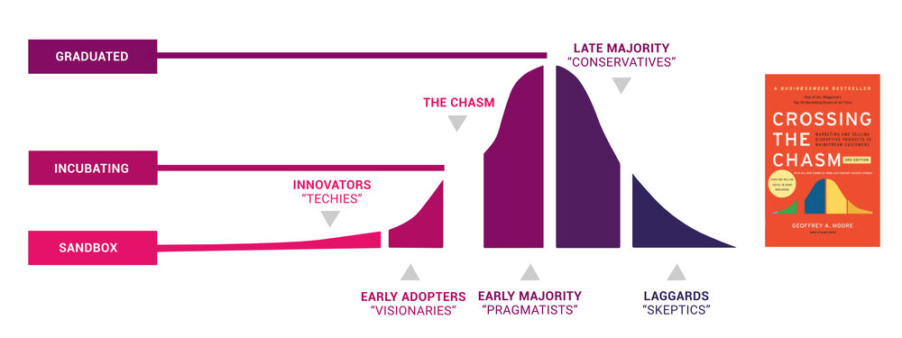
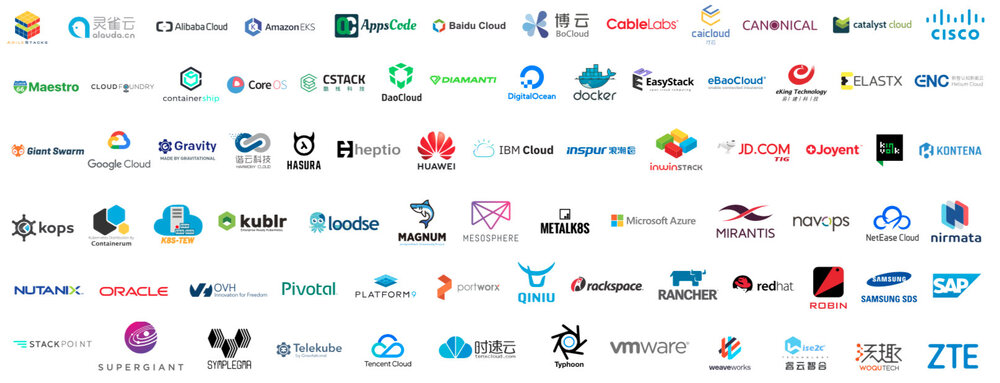

2019年2月初，CNCF 发布了2018年的年度报告，这是 CNCF 继2017年度报告之后，第二次发布年度报告，2017年度的报告只有区区14页，今年的报告长度增长了一倍达31页。下面我将带大家一起来深度解读下这份2018年的年度报告，一窥 CNCF 过去一年里在推广云原生的道路上取得的进展。
注：本文最后附上了2017年和2018年度的报告下载地址。
CNCF 年度报告涵盖的范围
在解读 CNCF 的2018年度报告之前，我们先简单回顾下2017年度的报告，因为2017年度报告是 CNCF 的首份年度报告，这样我们也能更好的了解 CNCF 的来龙去脉。
2017年度报告已经基本确定了 CNCF 每个年度报告所包含的主题：
- 自我定位
- 会员参与情况
- 终端用户社区
- 项目更新
- 会议和活动
- 社区
- 培训和认证
以上为 CNCF 主要的市场活动，2017年时其成立的第二年，经过一年时间的筹备，这一年里各种市场活动都已经开始确立并有声有色的开展了起来，包括 KubeCon、成员单位、终端用户都已经发展起来了，以后历年里只是对其不断的发展和完善。
2018年度报告中又新增了一些主题，这些主题是从2018年开始开展的，包括：
- 项目更新与满意度调查
- 给 CNCF 项目的维护者发调查问卷询问满意度
- CNCF charter 的修订（2018年11月）
- 项目更新与发布
- 项目服务与支援
- 专项活动、文档、网站与博客支持
- 本地化、IT 支持和培训
- 社区拓展
- 社区奖项
- CNCF Meetup
- CNCF Ambassador 计划
- 卡通吉祥物 Phippy
- 生态系统工具
- devstats
- CNCF Landscape 和路线图
- 项目 logo 物料
- 测试一致性项目
- 国际化
- 进入中国
- 本地化网站
详情请大家从本文最后的链接下载报告原文以查看详情。
CNCF 的定位
CNCF（云原生计算基金会）成立于2015年12月11日，每届年度报告的开篇都会阐明 CNCF 的定位，CNCF 的自我定位在2018年发生了一次变动，这也说明基金会是跟随市场形势而动，其定位不是一成不变的，其中的变化暗含着 CNCF 战略的转变。
CNCF 的2017年度定位
2017年度报告中是这样正式介绍自己的：
The Cloud Native Computing Foundation (CNCF) is an open source software foundation dedicated to making cloud-native computing universal and sustainable. Cloud-native computing uses an open source software stack to deploy applications as microservices, packaging each part into its own container, and dynamically orchestrating those containers to optimize resource utilization. Cloud-native technologies enable software developers to build great products faster.
We are a community of open source projects, including Kubernetes, Envoy and Prometheus. Kubernetes and other CNCF projects are some of the highest velocity projects in the history of open source.
可以看到介绍中的重点技术是：微服务、容器、动态编排。而在2018年 CNCF 对自己进行了重新的定位和包装，增加了新的内容。
CNCF 的2018年度定位
2018年度报告中 CNCF 对自己的定位是：
The Cloud Native Computing Foundation (CNCF) is an open source software foundation dedicated to making cloud native computing universal and sustainable. Cloud native technologies empower organizations to build and run scalable applications in modern, dynamic environments such as public, private, and hybrid clouds. Containers, service meshes, microservices, immutable infrastructure, and declarative APIs exemplify this approach.
We are a community of open source projects, including Kubernetes, Prometheus, Envoy, and many others. Kubernetes and other CNCF projects are some of the highest velocity projects in the history of open source.
我们可以看到其表述中更加注重多云环境，主要涉及的技术比2017年多了Service Mesh（服务网格）、不可变基础设施和声明式 API。
数读报告
CNCF 年度报告的原文主要是汇报了 CNCF 一年来的所展开的活动和进展，下表示根据 CNCF 2017和2018年度报告整理了关键数据。
| Year | 2016 | 2017 | 2018 |
|---|---|---|---|
| Members | 63 | 170 | 365 |
| Contributors | - | 18687 | 47358 |
| CNCF Meetup Members | - | 53925 | 89112 |
| Projects | 4 | 14 | 32 |
| End User Community Members | - | 32 | 69 |
| Conference and Events Participants | - | 4085 | - |
| Certified Kubernetes Partners | - | 44 | - |
| Certified Kubernetes Service Providers | - | 28 | 74 |
| CNCF Ambassador | - | - | 65 |
| Kubernetes Training Partners | - | - | 18 |
注：其中2016年是 CNCF 正式开始工作的第一年，大部分数据因为活动尚未开展而缺失。
从上表中我们可以看到 CNCF 诞生三年来基金会成员规模、托管项目的贡献者、参加 CNCF 名义的 Meetup 的人数取得较大范围的增长，尤其是2018年，因为基金会成员的爆发式增长（+130%），CNCF 开始给成员分级，会员级别、费用和权益也在 CNCF 官网上明码标价。
2018年 CNCF 组织的 KubeCon&CloudNativeCon 开始固定每年在西欧、北美和中国举行，且2018年是首次进入中国；原来的 Certified Kubernetes Partners 也取消了变成了 Certified Kubernetes Service Providers；CNCF 的 Ambassador 计划拥有了来自15个国家的65位 Ambassador，在世界各地为云原生布道；CNCF 还首次引入了 Kubernetes Training Partner。
2018 年 CNCF 又推出了一系列新的认证（CKA 为2017年推出），包括：
- CKA（Kubernetes 管理员认证）：这是 CNCF 最早制定的一个证书，顾名思义，通过该认证证明用户具有管理 Kubernetes 集群的技能、知识和能力。虽然该证书在2017年即推出，但2018年对考试做了更细致的指导。KCSP 要求企业必须有至少三人通过 CKA。
- CKAD（Kubernetes 应用开发者认证）：该认证证明用户可以为 Kubernetes 设计、构建、配置和发布云原生应用程序。经过认证的 Kubernetes Application Developer 可以定义应用程序资源并使用核心原语来构建、监控 Kubernetes 中可伸缩应用程序和排除故障。
- KCSP（Kubernetes 服务提供商认证）：截止本文发稿时共有74家企业通过该认证。该认证的主体是企业或组织，通过 KCSP 的企业意味着可以为其他组织提供 Kubernetes 支持、咨询、专业服务和培训。通过该认证的中国企业有：灵雀云、阿里云、博云、才云、DaoCloud、EasyStack、易建科技、精灵云、谐云科技、华为、时速云、星号科技、睿云智合、沃趣、元鼎科技、ZTE。
- Certified Kubernetes Conformance（Kubernetes 一致性认证）：通过该认证的 Kubernetes 提供商所提供的服务，意味着其可以保证 Kubernetes API 的可移植性及跨云的互操作性；及时更新到最新的 Kubernetes 版本；是否一致是可以通过运行开源脚本验证的。截止本文发稿通过该认证的中国企业的发行版有：灵雀云（ACE、ACP、AKS）、才云 Compass、华为 FusionStage、酷栈科技 CStack MiaoYun、Daocloud Enterprise、新智认知新氦云、浪潮云、京东 TIG、网易云、七牛云、同方有云、睿云智合 WiseCloud；通过认证的中国企业托管平台有：阿里云、百度云、博云、EasyStack、易建科技、谐云科技、华为云 CCE、腾讯云 TKE、时速云、ZTE TECS。
以上是 CNCF 提供的主要证书，一般通过 KCSP 的企业都要先通过 Kubernetes 一致性认证，而通过 Kubernetes 一致性认证不一定要同时通过 KCSP，所以我们看到很多通过 Kubernetes 一致性认证的企业就不一定会通过 KCSP，因为 KCSP 的要求更多，至少要成为 CNCF 会员才可以。
下面将就 CNCF 会员、托管项目的成熟度等级划分、Kubernetes 服务提供商认证和 Kubernetes 提供商认证做详细说明。
CNCF 会员
2018年 CNCF 的会员单位经历了爆发式增长，从170家增长到365家。CNCF 制定了如下的会员等级：
- Silver Member
- Gold Member
- Platinum Member
- Academic/Nonprofit Member
- End User Member
不同等级的会员需要交纳的年费与权益不同，详情请见 https://www.cncf.io/about/join/。
成为 CNCF 会员的好处
成为 CNCF 会员包括但不限于如下好处：
- 将可以参与 CNCF 市场委员会、CNCF Webinar、在 CNCF 和 Kubernetes 官网发表博客、博客被 KubeWeekly 收录、
- 获得 KubeCon + CloudNativeCon 的门票折扣和参与大会的市场活动
- 对于 Kubernetes 系列认证如 KCSP、入选 TOC 也要求必须成为 CNCF 会员才可以获得
- End User Case Study
- 有机会加入 Ambassador 计划
- 在社区里具有更多的话语权，例如 CNCF 在全球范围内组织的活动
项目成熟度等级
自2015年底 CNCF 创立之初 Kubernetes 成为其首个托管项目以来，截止到2018年底，CNCF 已经托管了32个开源项目，随着越来越多的项目加入到 CNCF，为了更好的管理这些项目，为这些项目划分不同的成熟度等级就成了迫在眉睫的事情。

根据《Crossing the Chasm》一书中的技术采用生命周期理论，CNCF 将其托管的项目划分为三个等级：
- Graduated：对应于早期成熟项目。截止到本文发稿时只有 Kubernetes、Prometheus、Envoy 和 https://coredns.io/ 毕业。
- Incubating：对应于早期采用者阶段。截止到本文发稿时有 16 个项目。
- Sandbox：对应于创新者阶段。截止到本文发稿时有 12 个项目。
查看 CNCF 托管的项目列表请访问：https://www.cncf.io/projects/
CNCF 通过为项目设置成熟度水平是来建议企业应该采用哪些项目。CNCF 中托管的项目通过向 CNCF 的技术监督委员会（TOC）展示其可持续发展性来提高其成熟度：项目的采用率，健康的变化率，有来自多个组织的提交者，采用了 CNCF 行为准则，实现并维护了核心基础设施倡议（Core Infrastructure Initiative）最佳实践证书。详细信息在 毕业标准v1.1。
Certified Kubernetes Service Provider
通过 KCSP 意味着企业具有为其他企业或组织提供 Kubernetes 支持、咨询、专业服务和培训的资质。 2018年又有46家企业通过了KCSP，通过该认证的企业累计达到76家。

如何通过 KCSP
要想通过 KCSP 必须满足以下三个条件：
- 三名或更多工程师通过认证Kubernetes管理员（CKA）考试。（CKAD考试不计入此要求）
- 支持企业最终用户的商业模式，包括为客户提供驻场工程师
- 成为 CNCF 会员
通过 KCSP 有如下好处：
- 企业的 logo 会出现在 Kubernetes Partners 页面
- 参加与云原生项目 leader、TOC 成员、CNCF Governing Board 的月度会议
- 向终端用户的 leader 寻求帮助
因为有如上这些好处，为了获得 Kubernetes 项目实施的资质，同时保持与基金会至今的交流，Kubernetes 厂商对该认证都趋之若鹜。
Certified Kubernetes offering
通过 KCSP 认证只代表企业有为他人实施 Kubernetes 项目的资质，而企业自身可能并不对外提供 Kubernetes 平台或服务，这些企业可能只是系统集成商或 ISV，这时候 CNCF 又推出了 Kubernetes 提供商认证。
Kubernetes 认证的提供商包括 Kubernetes 发行版、托管平台和安装器，通过认证的工具或平台将允许使用 Kubernetes 认证的 Logo，并保证 Kubernetes 一致性认证。
展望 2019
2018年 Kubernetes 成为 CNCF 孵化的首个毕业项目，根据 CNCF 打造的项目成熟度模型，Prometheus、Envoy、CoreDNS 相继毕业，CNCF 的眼光早已不再仅盯着 Kubernetes 了，CNCF Landscape 几乎包揽了所有云计算相关开源项目。可以说 CNCF 早已超出了 Kubernetes 的范畴，而是旨在一个建立在 Kubernetes 为底层资源调度和应用生命周期管理之上的生态系统，CNCF 中还演进出了如 Service Mesh 和 Serverless 之类的分支。
从 CNCF 2017和2018年度的变化来看，其中已经去掉了”dynamically orchestrating“的字眼，也就意味着 Kubernetes 在容器编排领域已经胜出，进而强调多云环境，同时 CNCF 推动的 Kubernetes 一致性认证也受到众多云厂商的支持，这也意味着 Kubernetes 将成为多云环境 API 一致性的保证。
CNCF 在2019年的战略将更聚焦于开发者社区，协助尤其是来自终端用户的开发者成为项目的 contributor 和 maintainer，保证终端用户的意见能够在社区里被正确地传达和并最终成功地采纳云原生。